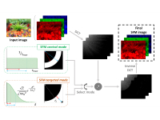
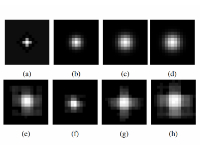
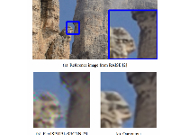
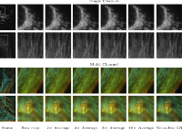
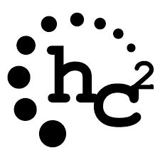
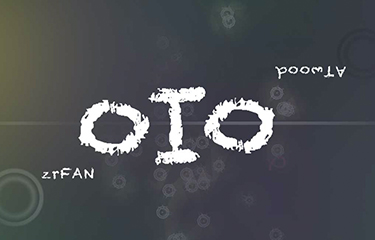

About />
class
RuofanZHOU:
··
# I'm ambitious and love new challenges :)
··
# My vast variety of skills is continuously expanding.
··
def
__init__(
self ):
····
self.name = 'Ruofan Zhou'
····
self.location = 'Switzerland'
····
self.email = 'zrfanzy@gmail.com'
··
def
education(
self ):
····
return
{
······
'2015-2020' : 'Ph.D. in Computer Science, École Polytechnique Fédérale de Lausanne',
······
'2011-2015' : 'B.Eng. in Computer Science and Technology, Tsinghua University',
······
'2012-2015' : 'B.A. in Digital Entertainment Design, Tsinghua University'
····
}
··
def
work_experience(
self ):
····
return
{
······
'2020-now ': 'Quantitative Analyst at Systematica Investments' ,
······
'2014-2014': 'Research Intern at Yitu Inc.' ,
······
'2013-2013': 'Software Engineer Intern at Google'
····
}
Research />
Check out my selected publications during my Ph.D.
[Paper]
Check out my selected publications during my Ph.D.
The full publication list can be find in my Google Scholar



Deep Residual Network for Joint Demosaicing and Super-Resolution
Ruofan Zhou, Radhakrishna Achanta, Sabine Süsstrunk
CIC 2018

Misc />
More about zrfan...
Coding
Rank 76/2815 in Google#️⃣Hash Code 2017 
Bronze Medal at ACM/ICPC🎈SWERC 2015
Problem Setter for HC2🇨🇭2016-2020 
Projects
Grocery Helper - Mobile Website
Personality Analysis - Web APP 
OIO🎮- Global Game Jam 2015 
Music